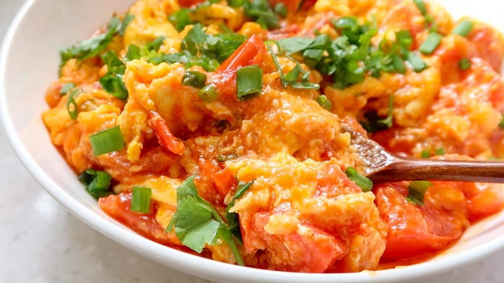

Chinese Tomato Egg Stir-Fry

This is an iconic dish that many Chinese people grow up eating for breakfast.
The most memorable version was one where the egg was creamy (as opposed to that scrambled egg texture). The creamy egg mixed-in seamlessly with the flavorful tomato sauce – making it look like a curry.
Ingredients
Stir-Fried Tomato Mixture
- 2 Tablespoons Vegetable Oil
- 2 Stalks Green Onion
- 2 Whole Tomatoes
- 3 Tablespoons Ketchup
- 2 teaspoons (!) Sugar
- ¼ Cup Water (60ml)
- 600g / 1.3 pounds diced pork
Starch Mixture
- 1 teaspoon (!) Corn Starch Powder (or Potato Starch)
- 2 Tablespoons Water
Stir-Fried Egg Mixture
- 2 Tablespoons Vegetable Oil
- 5 Whole Eggs
- ½ teaspoon Salt (For Seasoning Eggs)
- Few cracks Black Pepper (or White Pepper) (For Seasoning Eggs)
- ½ teaspoon (!) Chicken Stock Powder (Optional - ok to skip)
- 1 cup water
- Slurry (potato starch 5 Tbsp + water 4 Tbsp)
Garnish
- Handful of Chopped Green Onions
- Handful of Chopped Cilantro
Instructions
Make Stir-Fried Tomato Mixture
- Cut 2 whole tomatoes in half. Remove the stem portion from both. Then cut into wedges. Afterwards, cut the wedges in half again - so it turns bite-sized.
- Cut green onion stalks into thin pieces. Set aside the white portion for frying in oil. And then green portion for garnish.
Make Egg Mixture
- Crack 5 eggs into a bowl. Then season with salt (½ teaspoon!), as well as few shakes of black pepper. Whisk thoroughly - so the yolk and white turns into one.
Make Starch Mixture
- Mix Corn Starch Powder (1 teaspoon!) with Water (2 Tablespoons). Set aside for later.
Stir-Fry Tomatoes
- Place Vegetable Oil (2 Tablespoon) into a wok. Place on medium-high heat. Then add in the Green Onion (white portion). Once the pieces start to sizzle, add in the tomato chunks.
- After you add-in the tomatoes, stir-fry it around for 1 minute. Then add in Ketchup (3 Tablespoons) and Sugar (2 teaspoons!). Then, add in ¼ cup of Water (60 ml).
- Once it comes back up to a boil, give the starch mixture another quick stir. Then add-in the starch mixture into the tomatoes and give everything a few stirs. Turn off the heat and place the tomato mixture into a separate bowl.
- Quickly wash the wok and dry it off with a paper towel.
Stir-fry Egg Mixture
- Add 2 Tablespoons of cooking oil into the wok. (Make sure there is a small layer of oil - feel free to add another Tablespoon if needed). Place on medium-high heat.
- Once the oil is hot, add in the beaten eggs. After 10 seconds - the egg will start to set at the edges (reference picture). Immediately, add in the stir-fried tomato mixture.
- Now gently fold the egg that have set at the edges, inwards - into the tomatoes. Repeat this step - this will make large, fluffy egg curds.
- At this stage, if you have chicken stock powder on hand - add in ½ teaspoon (!) Skip this ingredient, if you don't have.
- Now, gently break up the large egg pieces into the tomato mixture with your spatula. Stir-fry everything for 15-20 seconds more. Then turn off heat.
- Plate and garnish with green onion (and cilantro if you like!)
- Serve with a bowl of fresh hot rice! Bon Appetit!
Return to Homepage
Return to Top
Credit to Daniel @ Future Dish